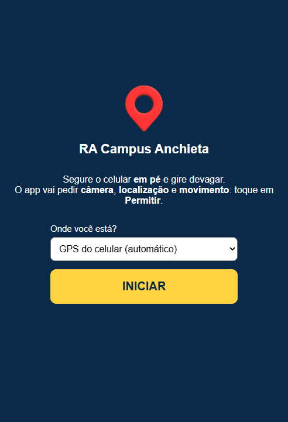

De longe (5 km): um pino com os nomes dos prédios. O fundo verde é a câmera falsa do navegador de teste.
Centro Universitário Anchieta — Ciência da Computação
Localização dos prédios do campus Prof. Pedro C. Fornari
Prof. Clayton Valdo
| Integrante | RA |
|---|---|
| Mateus Tavares Ruiz | 2300567c |
Projeto: https://github.com/mateustavaresruiz/atividade03-ra-campus
App: https://mateustavaresruiz.github.io/atividade03-ra-campus/
Novembro de 2026
App de Realidade Aumentada markerless (sem marcador impresso) que funciona como um "Maps" na câmera do celular: ao apontar o celular, aparece o marcador (pino vermelho) sobre cada prédio do campus, com o nome logo acima e a distância. Quando o prédio está fora da tela, uma seta na borda indica para que lado virar. A posição vem do GPS e a direção para onde a câmera aponta vem da bússola (sensores de orientação) — é a chamada RA baseada em localização.
| Tecnologia | Papel no projeto |
|---|---|
| HTML, CSS e JavaScript | App web: roda no navegador do celular, sem instalar nada |
| MediaDevices.getUserMedia | Abre a câmera traseira e mostra o vídeo ao fundo |
| Geolocation API | GPS: latitude, longitude e precisão |
| DeviceOrientation API | Bússola/giroscópio: para onde a câmera aponta (deviceorientationabsolute no Android, webkitCompassHeading no iPhone) |
Modelo map_pin.fbx | Marcador fornecido na atividade; foi renderizado em imagem (pino.png) com three.js para ser usado na tela |
| OpenStreetMap | Fonte das coordenadas dos prédios |
| GitHub + GitHub Pages | Código na nuvem e hospedagem HTTPS (câmera e GPS exigem HTTPS) |
Observação: a primeira versão usou A-Frame + AR.js com o modelo 3D. Nos testes em celular, a parte 3D não aparecia e o GPS do AR.js travava; a versão final faz o cálculo diretamente em JavaScript, o que deixou o app mais leve e confiável.
atividade03-ra-campus/ ├── index.html app: câmera, GPS, bússola, cálculos e desenho ├── pontos.js prédios (nome, latitude, longitude) e cálculo de distância ├── modelos/ │ ├── map_pin.fbx marcador 3D fornecido pelo professor │ └── pino.png imagem do mesmo marcador, usada na tela ├── docs/ documentação, link do projeto e roteiro do vídeo └── README.md instruções
abre o link → toca em INICIAR → permite movimento, câmera e localização → câmera traseira ao fundo → GPS a cada 3 s (onde estou) bússola a cada movimento (para onde aponto) → para cada ponto: distância (Haversine) e direção (azimute) → diferença entre a direção do ponto e a direção da câmera ├─ dentro do campo de visão → pino + nome + distância na posição certa da tela └─ fora → seta ◀ ou ▶ na borda → repete a cada quadro (requestAnimationFrame)
PONTOS: os 7 pontos com o centro de cada prédio no OpenStreetMap.distanciaMetros(): fórmula de Haversine (distância em metros entre duas coordenadas).| Ponto | Latitude | Longitude |
|---|---|---|
| Prédio 1 | -23.214412 | -46.891534 |
| Prédio 2 | -23.212863 | -46.892935 |
| Prédio 3 | -23.213953 | -46.892904 |
| Prédio 4 | -23.214494 | -46.893442 |
| Biblioteca | -23.213193 | -46.892648 |
| Prédio Administrativo | -23.213798 | -46.892063 |
| Anfiteatro | -23.215327 | -46.891176 |
Todos os pares ficam a mais de 50 m entre si, exceto Prédio 2 e Biblioteca (47 m, prédios vizinhos). A Biblioteca não tem nome no OpenStreetMap; foi identificada pelo mapa do enunciado.
Os navegadores só mostram alguns pedidos de permissão após um toque. O botão pede, em ordem:
movimento (DeviceOrientationEvent.requestPermission, exigido no iPhone), câmera
(getUserMedia com facingMode: "environment") e localização
(getCurrentPosition). Se algo for negado, a própria tela explica como liberar.

ligarGPS()Lê a posição com getCurrentPosition a cada 3 segundos (alta precisão). Em alguns celulares
o watchPosition não respondia, por isso foi usada a leitura periódica.
ligarBussola(), leituraGiro(), leituraBussola()rumoDaCamera() converte os ângulos alpha/beta/gamma na direção para onde a câmera traseira
aponta (fórmula da especificação W3C). No Android há duas fontes: a bússola
(deviceorientationabsolute), que sabe onde é o norte mas responde com atraso, e o
giroscópio (deviceorientation relativo), que responde na hora mas não sabe onde é o
norte. Usando só a bússola, o pino "acompanhava" a câmera antes de voltar ao lugar. Por isso o
movimento vem do giroscópio e a bússola só corrige, devagar, a diferença até o norte
(correcao). No iPhone, webkitCompassHeading já vem pronto.
novaLeitura() lê também a inclinação do celular (beta): em pé, beta ≈ 90°.
azimute(), diferenca()azimute() calcula a direção (0° = norte, 90° = leste) da pessoa até o ponto.
diferenca() dá o ângulo entre essa direção e a da câmera, de -180° a 180°
(negativo = o ponto está à esquerda).
desenhar()x = centro + (diferença / (campo/2)) × (largura/2).Testes no computador (Microsoft Edge controlado pelo protocolo de depuração, com posição de GPS e direção da câmera definidas por teste):
| Situação | Resultado |
|---|---|
| 5 km do campus, olhando para a faculdade | Um pino com os 7 nomes em coluna, cada um com a distância |
| 5 km do campus, de costas | Setas "◀ nome · 5,0 km" para cada ponto |
| Entrada do campus (70 m do Anfiteatro), olhando para os prédios | 6 pinos na tela, sem sobreposição; seta para o Anfiteatro |
| Girar 10° com a bússola atrasada (simulada) | O pino anda ~116 px para o lado oposto na hora (giroscópio) |
| Inclinar 20° para cima | Os pinos descem na tela (presos ao horizonte) |
De longe (5 km): um pino com os nomes dos prédios. O fundo verde é a câmera falsa do navegador de teste.

Na entrada do campus: um pino por prédio e seta para o que está fora da tela.
Modelo map_pin.fbx: material da atividade. Coordenadas: © colaboradores do OpenStreetMap (ODbL).